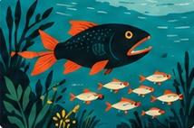
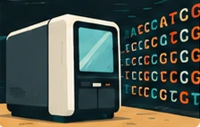

Explorer les thèmes
Différents regards sur la complexité du vivant.
Animations à découvrir
Jouez, explorez et voyez les idées prendre vie.

Dérive génétique
Découvrez comment le hasard peut, à lui seul, transformer une population.
Explorer l’animation
Dynamique prédateurs–proies
Explorez les cycles entre prédateurs et proies.
Bientôt disponible
À l’intérieur d’un séquenceur Illumina
Passez de l’instrument à l’échelle microscopique.
Bientôt disponible